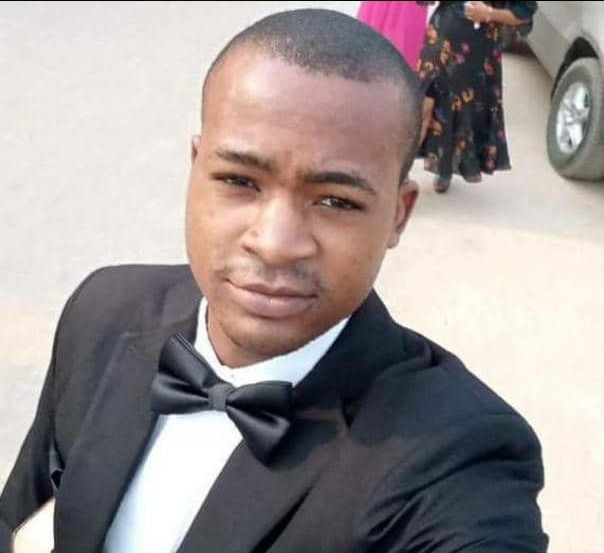

Self Description

My name is Michael Onucheojo, I'm from Nigeria, Olamaboro Local Government
Area of Kogi State.
I was born into the family of Mr and Mrs Seidu Michael
on the 2nd of June, 1996. I did my primary School in Unity Primary School and
my Secondary School in
Unity Comprehensive Secondary School, Ankpa, Kogi State. Afterwards, I gained
admission into the University of Nigeria, Nsukka. Where I studied Philosophy and
graduated with a Second Class-Upper Grade. I am currently in Lagos State, teaching in Living
Stone secondary school to make earns meet.
Things I like doing includes the following
- Reading books especially godly, motivational and academic books
- Going to church
- Making new friends and meeting people
- Dressing neat
- Travelling
Currently, I'm learning web development with Upskills Development Institute, a prestigous
and noble institution saddled with the responsiblity of helping the youth achieve
the beautiful
and glorious destiny they have envisioned. My aspiration
and objectives regarding Upskill's web development training are centered on leveraging this
oppurtunity
to transform my life, and positively impact the society at large.
Below are some of my aspirations and objectives in this training:
Personal Growth
Through intensive web development with Upskil's, I aim to expand my knowledge and proficiency
in coding languages, websites design, and development fromworks.
This journey represents a significant
step toward enhancing my skills and adapting to the rapidly evolving digital landscape.
Continous Learning
I aspire to cultivate a mindset of lifelong learning, staying updated with the latest trends and
technologies in web development through ongoing education, workshops,
and self directed study.
Career Advancement
By mastering web development skills, I seek to unlunck new oppurtunities in the tech industry. Whether
it's securing a job as a web developer, pursuing freelance projects,
or launching my own digital
ventures. I am committed to leveraging my new found expertise to advance professionally and financially.
Building a strong portfolio
One of my objective is to build a strong portfolio of web development projects, showcasing my abilities
to potential employers or clients and demonstrating my capacity to deliver
high-quality work.
Financial Stability
With a thriving carrer in web development, I aspire to achieve financial stability not only for my self
but also for my family. By earning a competitive income in the tech sector.
I aim to provide support and
security for my loved ones, contributing to their overall well-being and prosperity and in like manner
extend a helping hand to as many that may need
my help in whichever way possible insofar as it is within my
reach.
Networking and collaboration
I seek to connect with other professionals in the web deelopment community, both locally and globally,
to exchange knowledge, collaborate on projects, explore new
opportunities for growth and collaborations.
community Impact
Beyond personal goals, I am passionate about empowering my community through technology. As a web
developer which I hope to become. I envision organizing workshops, mentoring sessions, and community projects
aimed at bridging the digital divide and equipping fellow residents with skills needed to thrive in the
digital age.
You can reach me on the following social media handles:
-
chat me on facebook
-
follow me up on Instagram
-
follow me on x to see interesting post
-
chat me on whatsapp @ +2347017524921
-
Reach me on my gmail
THANK YOU!